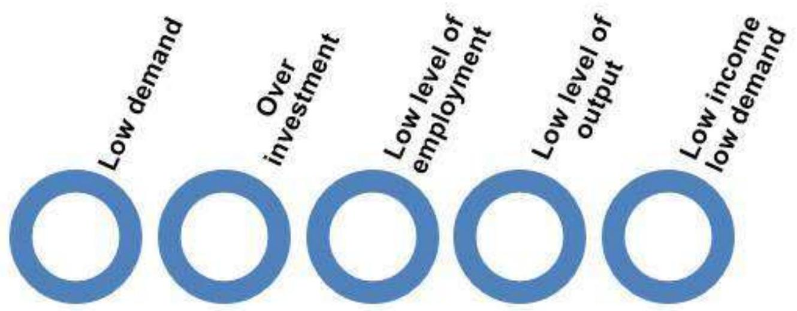

Introduction
Chapter 1 · All Questions and Complete Solutions
Exercises
Q
1
Microeconomics vs macroeconomics
What is the difference between microeconomics and macroeconomics?
Conclusion
Before we distinguish micro economics with macroeconomics, it is very important for us to understand the meaning of terms economics, micro and macro.
Economics - It is a social science, which is concerned with the production, distribution and consumption of goods and services.
It is a study of allocation of scarce resources by individuals, businesses, governments and countries to satisfy their needs.
- Micro - It means very small.
- Macro - It means large
Microeconomics is that branch of economics which deals with the behavior of individual economic unit like a consumer or single commodity etc.
Macroeconomics is that branch of economics which deals with behavior of economy as a whole like national income, aggregate consumption, etc.
The basic point of difference between these two branches of economics are explained below -
| Points of Difference | Micro Economics | Macro Economics |
|---|---|---|
| 1. Meaning | It is the study of individual economic units. | It is the study of the economy as a whole |
| 2. Deals with | Individual economic variables like individual demand, etc. | Whole or total economic variables like aggregate demand, etc. |
| 3. Objectives | Allocation of resources and price determination | Determination of national income and employment of resources |
| 4. Business Application | Applied to operational or internal issues | Applied to external and environmental issues |
| 5. Importance | It is helpful in determining the prices of a product along with the prices of factors of production. | It maintains stability in the general price level and resolves the major problems of economy like inflation, deflation, unemployment, etc. |
Q
2
Features of a capitalist economy
What are the important features of a capitalist economy?
Conclusion
Capitalist economy is that economic system where the means of production are owned by private individuals and profit is the main motive.
There is no interference by the government in the economic activities of the economy.
So it is also known as free market economy.
The main features of a capitalist economy are given below.
1. Private property - Under this economic system all the means of production are privately owned that is they come under private property.
2. Price mechanism - Capitalist economy is gained by price mechanism, here the prices are determined by interaction of demand and supply without the interference of government or any other external force.
3. Freedom of enterprise - In capitalist economic system every individual is independent to his means of production or in any occupation that he likes.
4. Sovereignty of consumer - Under capitalist economic system consumer plays the most important role.
The entire production pattern is based upon the desires, wishes and demand of consumer.
5. Profit motive - Profit maximisation is the producer's main motive.
Profit guides production in a capitalist economy.
6. No government interference - Under capitalistic system government does not interfere in day to day economic activities.
The producers and consumers are free to take decisions.
7. Self-interest - The inspiring force in this system is self-interest, it leads to hard work to earn maximum income by satisfying their consumer.
Q
3
Four major sectors of an economy
Describe the four major sectors in an economy according to the macroeconomic point of view.
Conclusion
According to macroeconomics, an economy can be divided into four major sectors
1. Household sector - This sector is the consumer sector, it is engaged in consumption of goods and services.
Households spend their income on payment for goods and services purchased and payment of tax to government.
2. Production sector - This sector is engaged in production of goods and services.
This sector makes payment for factor services to households, taxes to government and imports of material.
3. Government sector - This sector is engaged in activities related to taxation and subsidies.
4. External sector - This sector is engaged in export and import of goods and services.
Q
4
The Great Depression of 1929
Describe the Great Depression of 1929.
Conclusion
The Great Depression was a severe economic crisis that started in the year 1929. It was the longest, deepest and most widespread depression of the 20th century.
It originated in the United States of America when the stock market crashed which resulted in the beginning of a decade of high unemployment, poverty, low profit and deflation and it gradually spread to other countries of the world also.
The worldwide GDP fell by 15 %.
The main causes behind this crisis were -
a) The fall in aggregate demand due to under consumption and over investment.
b) Aggregate supply was greater than aggregate demand which resulted into depressing activities.
c) Due to under consumption and over investment the stock of finished goods started piling up, which resulted in low price level and consequently the low profit level.
d) The money in the economy was converted into unsold stock of finished goods that lead to an acute fall in employment and hence income level fell drastically.
e) The demand for goods in the economy was so low that the production was lowered leading to the unemployment.
The cause and effect relationship of the Great Depression can be summed up in this flow chart
